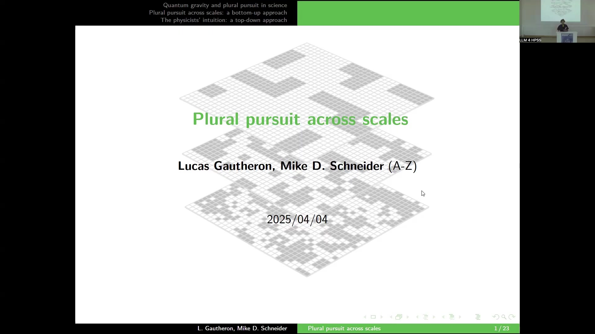
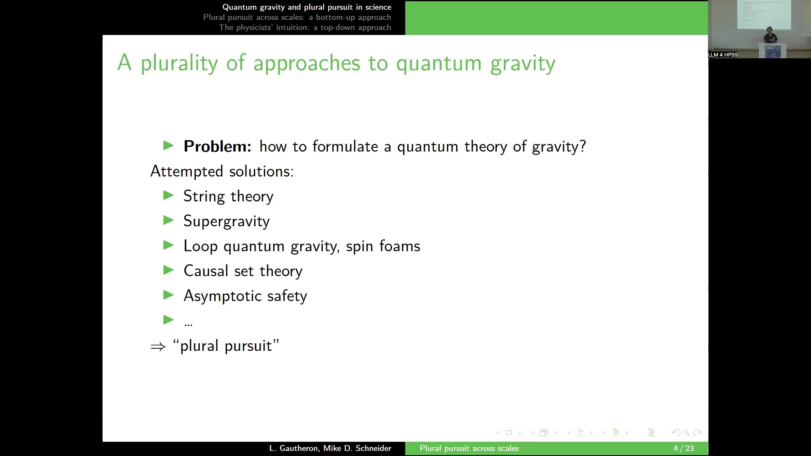
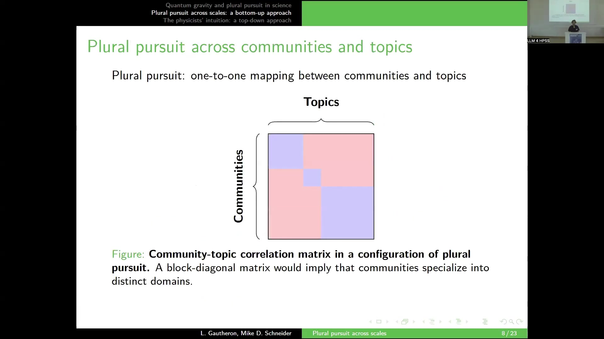
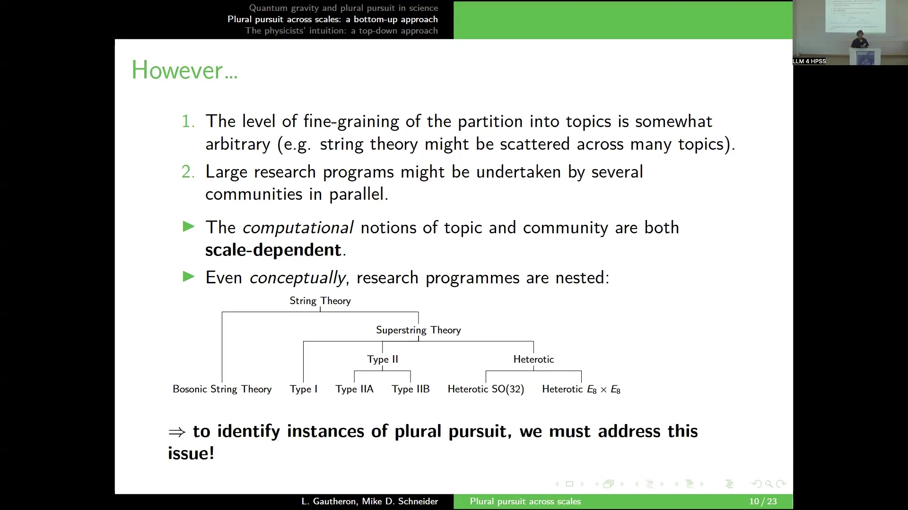
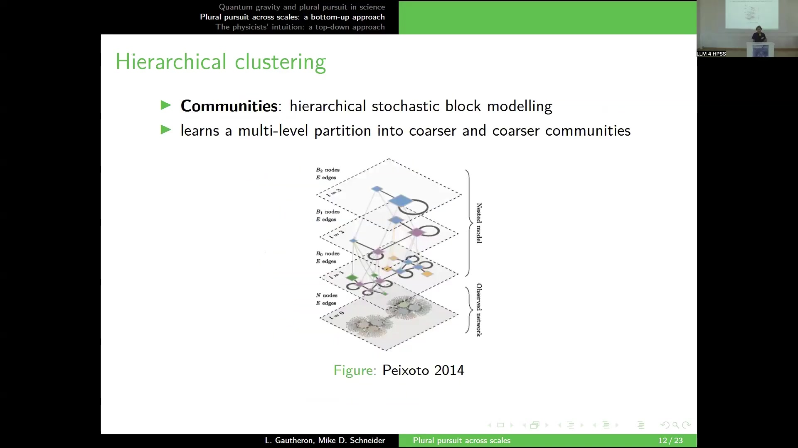

13 Quantum gravity and plural pursuit in science
Overview
In a collaborative endeavour, the authors, alongside Mike Schneider of the University of Missouri, address fundamental questions within the philosophy of science. Their methodology seamlessly integrates computational linguistic techniques with social network analysis. This investigation unfolds through three distinct phases: initially, the team presents a case study focusing on quantum gravity, thereby establishing its philosophical framework; subsequently, they propose a bottom-up reconstruction of the quantum gravity research landscape; finally, the study confronts this empirically derived reconstruction with physicists’ own perceptions of their field’s structure.
The enduring challenge of formulating a quantum theory of gravity, which seeks to reconcile knowledge of small and large scales, forms the core problem. Numerous attempted solutions exist, including string theory, supergravity, loop quantum gravity, spin foams, causal set theory, and asymptotic safety. To characterise this multifaceted situation, the authors introduce the concept of ‘plural pursuit’. They define this as distinct yet concurrent instances of normal science dedicated to a common problem-solving goal. Each instance articulates through a social community intertwined with an intellectual disciplinary matrix, drawing upon Kuhnian paradigms, Laudan’s research traditions, and Lakatos’ research programmes. This framework poses an empirical question: does quantum gravity research exemplify plural pursuit, manifesting as independent communities concurrently pursuing disparate paradigms?
To answer this, the authors undertook a comprehensive bottom-up reconstruction of the quantum gravity research landscape, encompassing both its linguistic/intellectual and social structures. They amassed a substantial dataset of 228,748 theoretical physics abstracts and titles from Inspire HEP. Their methodology involved two principal stages: linguistic analysis, employing the Bertopic pipeline for spatialisation into an embedding space, unsupervised clustering (K=611 topics), and specialty assignment to physicists; and social network analysis, utilising a co-authorship graph of 30,000 physicists with community detection (C=819 communities).
A key challenge arose from the scale-dependency of computational notions of topics and communities, exacerbated by the inherently nested nature of research programmes. To address this, the authors developed a hierarchical reconstruction strategy, employing Ward agglomerative clustering for topics and hierarchical stochastic block modelling for communities. They then devised an adaptive topic coarse-graining strategy, guided by the Minimum Description Length (MDL) criterion, to identify the optimal scale by balancing model fit to social structure against model complexity.
The bottom-up analysis yielded 50 coarse-grained topics, which the team then correlated with community structures. Findings revealed that whilst some topics aligned well with specific communities, others proved universally relevant. Notably, the bottom-up approach identified a large string theory cluster encompassing supergravity, aligning with physicists’ intuitions that these, despite historical differences, are not meaningfully separable at certain scales. This suggests that linguistic nuances without social consequences are effectively stripped away. The study concludes that socio-epistemic systems operate at multiple scales, necessitating cross-scale matching for identifying plural pursuit. It underscores the transformative potential of computational methods in revisiting and challenging long-held philosophical insights.
13.1 Philosophical Framing and Research Trajectory

In a collaborative endeavour, the authors, alongside Mike Schneider of the University of Missouri, address fundamental questions within the philosophy of science. Their methodology integrates computational linguistic techniques, previously explored, with social network analysis. This investigation unfolds through three distinct phases. Initially, the team presents a case study focusing on quantum gravity, establishing its philosophical framework. Subsequently, they propose a bottom-up reconstruction of the quantum gravity research landscape. Finally, the study confronts this empirically derived reconstruction with physicists’ own perceptions of their field’s structure.
13.2 The Problem of Quantum Gravity and the Concept of Plural Pursuit
Fundamental physics grapples with the enduring challenge of formulating a quantum theory of gravity, a theoretical endeavour seeking to reconcile our understanding of phenomena at both minute and vast scales. Numerous solutions have emerged, notably string theory, which remains the most prominent. Further approaches encompass Supergravity, Loop quantum gravity, spin foams, Causal set theory, and Asymptotic safety. To characterise this multifaceted situation, the authors introduce the concept of ‘plural pursuit’. This concept delineates situations where distinct, yet concurrent, instances of ‘normal science’ converge on a shared problem-solving objective, specifically the reconciliation of quantum mechanics and gravitation. Crucially, each such instance of normal science articulates through the interplay of a social community and an intellectual disciplinary matrix—a framework drawing upon Kuhnian paradigms, Laudan’s research traditions, and Lakatos’ research programmes. Consequently, an empirical question arises: does quantum gravity research exemplify plural pursuit, manifesting as independent communities concurrently pursuing disparate paradigms?
13.3 Bottom-Up Reconstruction: Data and Methodologies

To address this empirical query, the authors first undertook a comprehensive bottom-up reconstruction of the quantum gravity research landscape. This reconstruction encompassed both the linguistic and intellectual fabric of the field, alongside its inherent social structure. The team amassed a substantial dataset, comprising 228,748 abstracts and titles from theoretical physics literature, sourced from Inspire HEP. Their methodology unfolded in two principal stages.
Initially, a linguistic analysis elucidated the intellectual structure of the field. This phase crucially employed the Bertopic pipeline, a tool frequently discussed in contemporary computational linguistics. Documents underwent spatialisation into an embedding space. Subsequently, unsupervised clustering, executed at a highly fine-grained level (K=611 topics), identified distinct thematic areas. Such granularity proved essential for capturing niche quantum gravity approaches, some encompassing as few as 100 papers. Finally, the authors assigned each physicist a ‘specialty’, defined as the most prevalent topic across their collective publications. This process yielded a partition of authors into topics, reflecting the field’s intellectual architecture.
Concurrently, a social network analysis illuminated the field’s social dynamics. This analysis commenced with a co-authorship graph, where nodes represented individual physicists and edges denoted collaborative relationships. The network encompassed approximately 30,000 physicists. Applying a community detection method, the authors identified 819 distinct communities. This yielded an alternative partition of authors into communities, mirroring the field’s social organisation.
13.4 Scale-Dependency and Hierarchical Organisation in Research Landscapes
Within this analytical framework, plural pursuit signifies a direct, one-to-one correspondence between identified communities and their intellectual topics. An ideal configuration would manifest as a block-diagonal correlation matrix, where communities specialise in distinct domains, thereby exhibiting a clear division of labour. Conversely, applying this to the initial fine-grained partitions reveals a highly complex and ‘messy’ correlation heatmap, calculated using the normalised pointwise mutual information (npmi).
Several factors contribute to this observed complexity. Firstly, the arbitrary granularity of topic partitioning can fragment conceptually unified areas; for instance, string theory, intuitively a single research programme, might appear scattered across numerous fine-grained topics. Secondly, extensive research programmes often involve parallel efforts by multiple communities, shaped by diverse micro-social processes. Crucially, the computational definitions of both ‘topic’ and ‘community’ inherently exhibit scale-dependency, permitting literature and social networks to be partitioned at varying granularities. Beyond mere technicality, this issue reflects a deeper conceptual reality: research programmes are intrinsically nested. String theory, for example, encompasses families and sub-families, such as Superstring Theory branching into Type II and Heterotic, which further subdivide into Type I, Type IIA, Type IIB, Heterotic SO(32), and Heterotic E_8 x E_8, alongside Bosonic String Theory. Consequently, identifying genuine instances of plural pursuit necessitates addressing this inherent ambiguity across different scales.
13.5 Hierarchical Reconstruction and Adaptive Scale Selection

To navigate these complexities, the authors propose a hierarchical reconstruction of the quantum gravity research landscape. For topics, they employed Ward agglomerative clustering, iteratively merging the 611 fine-grained topics based on an objective function, thereby generating a comprehensive dendrogram. Similarly, for the community structure, the team implemented a hierarchical stochastic block model, as conceptualised by Peixoto (2014), which dynamically learns multi-level partitions into progressively coarser communities. These meticulously constructed hierarchical structures inherently introduce a notion of scale, enabling observation of the system at various granularities. For instance, one can observe the co-authorship network, where each physicist’s specialty is colour-coded, at differing levels of linguistic structure coarse-graining.
Nevertheless, a significant challenge persists: the selection of an appropriate scale remains largely arbitrary. To resolve this, the authors devised an adaptive topic coarse-graining strategy. This strategy posits that whilst topics capture subtle linguistic nuances, some possess no discernible consequence for scientists’ collaborative capacities. Consequently, their methodology systematically removes degrees of freedom from the fine-grained partition, provided this removal does not diminish useful information pertinent to understanding the social structure. This optimisation relies upon the Minimum Description Length (MDL) criterion, which seeks the partition that minimises a quantity balancing the linguistic partition’s explanatory power for the social structure against the complexity of the partition itself. The process involves iteratively refining the topic dendrogram, zooming in as long as the criterion improves, and halting when additional complexity yields insufficient informational gain regarding the social structure.
13.6 Bottom-Up Analysis: Emergent Topics and Community-Topic Correlations

Ultimately, the analysis yielded 50 distinct, coarse-grained topics, each labelled by representative N-grams for conceptual clarity. Focusing specifically on quantum gravity-related topics, the authors then employed a correlation matrix to align these coarse-grained topics with community structures across various scales. For each emergent topic, their methodology sought to identify the community that best explained its prevalence across the different levels of the hierarchical community structure. Notably, some expansive topics, such as a very large purple cluster, exhibited no strong ties to specific communities, suggesting their universal relevance across the field.
Conversely, other topics, exemplified by string theory, demonstrated a robust correspondence, aligning with a research programme linked to a community structure at the third hierarchical level. Intriguingly, certain quantum gravity programmes, such as Loop quantum gravity, correlated with communities situated at much lower, more fine-grained levels within the hierarchy. Collectively, these observations suggest an absence of a clear-cut plural pursuit configuration. For instance, a smaller community, whilst nested within the broader string theory community, appeared intellectually bound to the distinct topic of holography. Evidently, nested structures and an entanglement of different scales characterise the research landscape, precluding a straightforward division of labour.
13.7 Reconciling Bottom-Up Reconstruction with Physicists’ Intuitions

Subsequently, the authors proceeded to confront this empirically derived reconstruction with physicists’ own perceptions of their field’s structure. They conducted a survey amongst the founding members of the International Society for Quantum Gravity, requesting a list of approaches that, in their view, structured the quantum gravity research landscape. From the collective feedback, a comprehensive list of approaches emerged, including asymptotic safety, causal sets, dynamical triangulations, group field theory, LQG, spin foams, noncommutative geometry, swampland, modified dispersion relation, DSR, quantum modified BH, shape dynamics, tensor models, string theory, supergravity, and holography. The analysis particularly focused on string theory, supergravity, and holography, given physicists’ differing opinions on their conceptual separation.
To facilitate this comparison, the team trained a Support Vector Machine (SVM) classifier, utilising text embeddings (specifically, all-MiniLM-L6-v2 applied to titles and abstracts) and hand-coded labels, to predict which papers belonged to each approach. The confrontation between these supervised, ‘top-down’ approaches and the coarse-grained ‘bottom-up’ topics manifested as a detailed heatmap, illustrating their degrees of overlap. For certain approaches, the alignment proved remarkably strong, particularly for those frameworks considered well-defined and conceptually autonomous. Conversely, the model performed less effectively for phenomenological or less fully developed conceptual frameworks. A significant finding revealed a large string theory cluster within the bottom-up analysis, encompassing both supergravity and string theory. This observation converged strikingly with physicists’ intuitions, as articulated by one survey respondent: “I suppose there are a few people still interested in supergravity as a theory in its own right, […but] I don’t think this is a large community […] the overlap of people working on”supergravity” and “string theory” is so large that I’m not sure the communities can be separated in a meaningful way.” Evidently, once linguistic nuances lacking social consequences are stripped away, conceptually distinct areas may coalesce, even though initial linguistic clusters accurately reflect these differences.
13.8 Conclusions and Philosophical Implications
Socio-epistemic systems demonstrably manifest across multiple scales, implying that the very notions of communities and disciplinary matrices are inherently scale-dependent. Consequently, identifying configurations of plural pursuit—characterised by a one-to-one mapping between communities and their intellectual substrate—necessitates the careful alignment of these structures across varying scales. In the specific context of quantum gravity, a bottom-up reconstruction of the research landscape offers a powerful means to either confirm or re-assess existing physicists’ intuitions. Crucially, the increasing potency of computational methods empowers researchers to revisit and even challenge long-held philosophical insights, particularly those concerning the nature of paradigms and communities within scientific fields. Indeed, as one might paraphrase, computation emerges as the continuation of philosophy by other means.